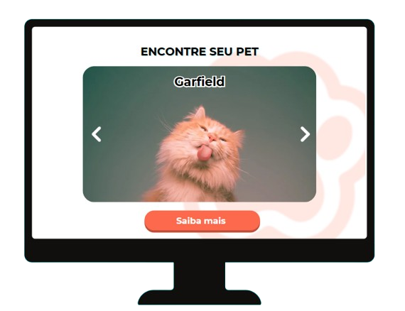

Tudo o que seu pet precisa, em um só lugar!
Uma plataforma inovadora criada para reunir informações e serviços essenciais para o cuidado e bem-estar dos animais.

Cuide da saúde: agende consultas vetérinas,
vacinas e exames diretamente pela nossa
plataforma, com total confiança.
Uma plataforma inovadora criada para reunir informações e serviços essenciais para o cuidado e bem-estar dos animais.
Com a Pataforma, você pode encontrar pets perdidos e ajudar a trazer de volta para casa aqueles que mais precisam.
